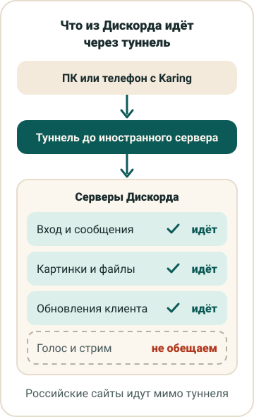

ВПН для Дискорда: что работает и чего не стоит ждать
Дискорд держит несколько соединений сразу. Через одно вы входите и переписываетесь, через другое грузятся картинки и файлы, через третье приходят обновления. Голос и трансляция экрана идут отдельным живым потоком. Первые три туннель Siberian VPN ведёт, а голос через наши серверы мы не обещаем, и ниже сказано почему. Начните с того, что именно не работает у вас.
Пара слов о сервисе, про который этот сайт. Siberian VPN платный, платёж разовый, первые 3 дня без карты. Основной клиент у нас бесплатный Karing. Запасной INCY берёт свою ссылку подписки в личном кабинете и доплаты не требует. В Happ, v2rayTun и Hiddify подписку мы не проверяли и работу там не обещаем.

Шаг 1. Найдите, что именно не работает
«Дискорд не работает» почти всегда означает одно из пяти. Найдите в таблице, на чём застряли вы.
| Что видите | Что за этим стоит | Через наш туннель |
|---|---|---|
| Окно висит на «Checking for updates» или «Starting» | Программа не достаёт до сервера обновлений | Обычно проходит |
| Серое окно, каналы пустые, сообщения не уходят | Нет связи с серверами входа и чатов | Обычно проходит |
| Текст есть, а вместо картинок, аватарок и эмодзи пустые квадраты | Файлы лежат на отдельных серверах, и застревают как раз их запросы | Обычно проходит |
| В голосовом канале «RTC Connecting» или «No Route» | Голосу нужен свой вид соединения | Не обещаем |
| Трансляция экрана не запускается или рвётся | Тот же поток, что и у голоса | Не обещаем |
Первые три строки устроены как обычный сайт: программа отправляет запрос и ждёт ответа. Такие соединения туннель и ведёт. Записанные голосовые сообщения в личке тоже сюда относятся, Дискорд пересылает их файлами, как картинки. Живой разговор устроен иначе, о нём в шаге 4.
Шаг 2. ВПН на ПК для Дискорда: администратор и TUN
На компьютере Дискорд работает отдельной программой, поэтому туннель нужен всей системе. В Karing за это отвечает режим TUN: он заворачивает в туннель трафик всех программ на компьютере.
- Установите Karing для Windows по кнопке в личном кабинете и добавьте подписку кнопкой «Добавить в Karing».
- Запускайте Karing от имени администратора, через правую кнопку мыши на ярлыке. Без этих прав режим TUN не включится, и Дискорд пойдёт мимо туннеля.
- Загляните в настройки Karing (шестерёнка), раздел «IPv6 / NTP / TUN / DNS / TLS». Режим TUN там должен быть включён, а «Пропустить проверку сертификата» выключена.
- Нажмите большую кнопку подключения.
- Закройте Дискорд полностью: правой кнопкой по его значку возле часов, пункт выхода из программы. Крестик в окне по умолчанию только прячет Дискорд в трей, и программа продолжает держать старые соединения. Потом откройте её снова.
Понять, что всё получилось, просто: загрузка проходит за обычное время, а в каналах видны картинки и аватарки. Если окно снова зависло, начните проверку с пункта 2.
На Mac порядок тот же, только при первом подключении система спросит разрешение на ВПН, а в настройках конфиденциальности Karing нужны «Локальная сеть» и «Полный доступ к диску».
Дискорд на компьютере и на телефоне можно держать на одной подписке, если это ваши устройства. Ограничение в числе сетей: одновременно подписка работает не больше чем из двух. Домашний Wi-Fi плюс мобильный интернет телефона дают две сети, так можно. Если третьим подключится ноутбук в другом месте, подписку заблокирует на час, а конфиг сбросится.
Шаг 3. ВПН для Дискорда на телефон
На андроиде кнопка в личном кабинете отдаёт установочный файл Karing, на айфоне Karing ставится из App Store. Дальше всё как на компьютере: «Добавить в Karing», согласиться на запрос, нажать кнопку подключения. На андроиде режим TUN включается в тех же настройках.
После этого смахните Дискорд из списка недавних приложений и откройте заново, чтобы он переподключился уже через туннель. Если Karing сам гаснет, пока телефон лежит в кармане, почти всегда виновата экономия заряда. Что с ней делать на андроиде и айфоне, расписано в статье про ВПН, который отключается.
Шаг 4. Голос и стрим: чего не ждать
В справке Дискорда об ошибках голосового соединения написано прямо: голос работает только с теми ВПН, которые пропускают особый вид трафика. На нём держатся все живые потоки: голосовые каналы, трансляции экрана, звонки в мессенджерах, онлайн-игры. Пакеты там отправляются без подтверждения доставки, зато быстро. Потерянный кусок звука никто не пересылает заново, разговор просто идёт дальше.
Наши серверы ведут обычные соединения, как у сайтов. Голос Дискорда через них мы не проверяли и не обещаем, ни в Karing, ни в запасном INCY. Если голосовые каналы для вас главное, проверьте их за три пробных дня: зайдите в любой голосовой канал и посмотрите, уйдёт ли надпись «RTC Connecting». Если она висит дольше минуты, голос с нашим сервисом у вас не заработает, и платить ради него не стоит.
В сети часто советуют сменить голосовой регион. По справке Дискорда, регион канала меняет администратор сервера в параметрах голосового канала («Переопределить регион»). Это выбор другого голосового сервера самого Дискорда, вид трафика от этого не меняется.
С онлайн-играми то же самое. Магазин и загрузки Стима через туннель идут, а матчи мы не обещаем, подробнее на странице про Стим. У Ватсапа граница проходит там же: переписка, фото и голосовые сообщения работают, звонки нет. Как это выглядит на телефоне, показано на странице про Ватсап.
Шаг 5. Браузер вместо программы
Веб-версия Дискорда открывается в браузере по адресу discord.com/app. Через неё удобно понять, где поломка. Если при включённом Karing в браузере Дискорд открывается, а программа висит, значит, программа идёт мимо туннеля, и пора вернуться к правам администратора и TUN из шага 2.
Расширение ВПН для браузера ведёт через себя только вкладки этого браузера. Программе на компьютере и приложению на телефоне оно ничего не даст. Чем расширение отличается от туннеля на всё устройство, разобрано в статье про расширение для ChatGPT, для Дискорда разница та же.
Если Дискорд всё равно не открывается
- На устройстве включён второй ВПН или прокси. На телефоне одновременно работает только один ВПН, поэтому оставьте Karing, остальные выключите.
- Сервер перегружен. Выберите в Karing другой сервер или пункт «Автовыбор сервера с наименьшей задержкой».
- Подписку продлили, а серверы в списке старые. Karing обновляет список раз в 12–24 часа, сразу обновить можно кнопкой с облаком и стрелкой рядом с подпиской.
- Мешает антивирус или брандмауэр. Справка Дискорда советует добавить программу в список разрешённых.
- Вы в рабочей или учебной сети. Там Дискорд может закрыть сетевой администратор, об этом тоже сказано в справке Дискорда.
Остальные разборы по приложениям собраны в статьях.